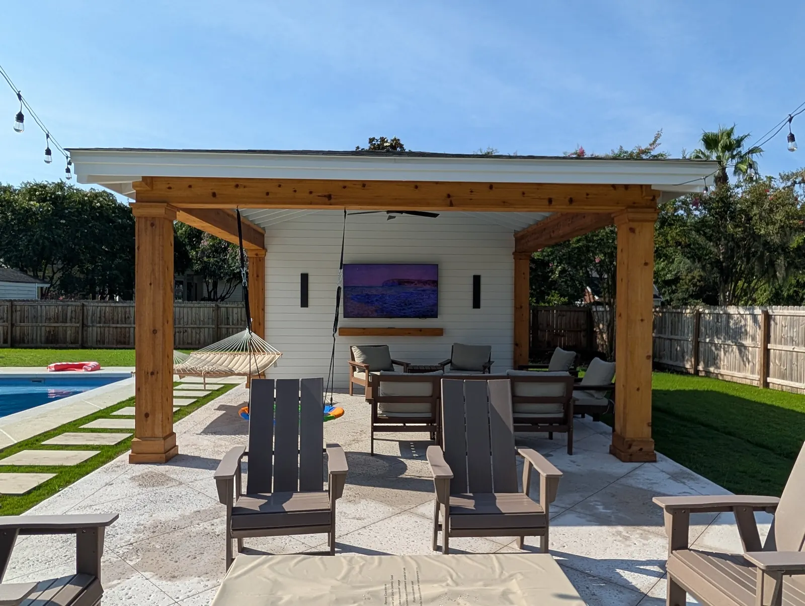

Pool Pavilion Design & Installation in Charleston, SC (2026 Guide)
A pool pavilion is one of the most requested additions we see in Charleston backyards right now, and for good reason. It transforms a pool area from a place you swim into a place you live in. Shade for the summer heat, a covered outdoor kitchen for entertaining, a fireplace for cool fall evenings. A well-designed pavilion turns your backyard into the most used room in the house.
At Cramers Landscaping, we design and build custom pool pavilions throughout Charleston and the Lowcountry. This guide covers everything Charleston homeowners need to know: what drives the cost, what styles are trending, what mistakes to avoid, and what our process looks like from the first conversation to the final walkthrough.

What Is a Pool Pavilion?

A pool pavilion is a covered outdoor structure built adjacent to or around a swimming pool. It is fully open on the sides (distinguishing it from an enclosed room) but provides permanent overhead coverage from the sun and rain. Depending on how it is configured, a pavilion can include an outdoor kitchen, fireplace, bar, ceiling fans, lighting, speakers, and comfortable furniture seating.
The difference between a pavilion and a pergola is primarily structural. A pergola has an open or slatted roof that allows light through. A pavilion has a solid, watertight roof. That distinction is meaningful in Charleston, where summer storms are intense and afternoon shade makes the difference between a backyard you actually use and one you avoid.
Pavilions also differ from enclosed pool houses, which have full walls, HVAC, and function more as a building. Most of our clients in the Charleston area are looking for something in between: fully covered, open-air, and built to handle the Lowcountry climate year-round.
Pool Pavilion Costs in Charleston, SC
One of the first questions we get is about cost. Here is a realistic breakdown based on our project history:
Basic Pool Pavilion
A baseline pool pavilion with a solid metal roof, treated lumber framing, and simple finishes starts around $40,000. This covers the structural build with a quality roof and basic ceiling treatment, but does not include additional feature add-ons.
Mid-Range to Premium Pavilions
Once you start adding features, the cost climbs. As a general rule:
- Outdoor kitchen addition: $10,000 to $25,000 or more, depending on appliances and finishes
- Fireplace addition: $10,000 to $25,000, depending on the masonry style and materials
- Outdoor bar or wet bar: varies, often bundled with the kitchen estimate
- Custom lighting and ceiling fans: $2,000 to $8,000+
A fully loaded pavilion with a kitchen, fireplace, and premium finishes can run $75,000 to $100,000 or beyond.
What Drives the Price Up the Most
Materials and finishes are the primary cost driver. A pavilion with standard pressure-treated lumber and a basic standing seam metal roof costs significantly less than one with exposed glulam timber beams, tongue and groove cypress ceiling, and Hardie-finished columns. Both are excellent structures, but the material selections drive entirely different aesthetics and price points.
For outdoor kitchens specifically, appliances and cabinet selections cause the most price variation. A grill-and-counter-only setup is very different from a build that includes a Green Egg, refrigerator, griddle, sink with plumbing, a kegerator, and custom cabinetry. Each appliance adds material and labor cost.
The lot conditions also affect price. A pavilion built on a level lot with easy access is simpler to build than one requiring significant grading, drainage work, or permitting for proximity to setbacks.
Popular Styles and Materials in Charleston Right Now

Charleston homeowners are currently gravitating toward a consistent look: clean, coastal-modern architecture with natural materials and a low-maintenance profile.
What We Are Building Most Often
Hardie board finishes on the columns and knee walls. Hardie is a fiber cement product that holds paint, resists moisture, and handles the coastal humidity without rotting or warping. It gives a clean, polished exterior appearance that photographs well and holds up long-term.
Standing seam metal roofs. Metal roofs have become the standard for outdoor structures in Charleston because they shed water efficiently, last for decades, and complement both traditional and modern architecture. They work especially well in a coastal climate where wood shake and asphalt shingles degrade faster.
Tongue and groove ceilings. Inside the pavilion, tongue and groove wood ceilings are the most requested feature we see. Stained or painted, they add warmth, texture, and a crafted feel that drywall alternatives cannot match. Cypress and pine are the most common species for this application.
The Rustic Alternative
One of our favorite pavilion projects was an open-rafter rustic design that used large glulam beams for both the structural members and the exposed rafter tails. The result was a timber-framed aesthetic with real structural presence. The beams are visible from inside and out, the ceiling has no boarding, and the entire structure reads as something that was built to last generations. This style suits wooded lots, larger estates, and clients who want something that feels more like a traditional outdoor room than a modern shade structure.
Common Mistakes Homeowners Make When Planning a Pool Pavilion
Most of the planning mistakes we see happen before anyone picks up a shovel. Here is what to watch for:
Not Accounting for Setbacks and Lot Constraints
Charleston's municipalities each have specific setback requirements for accessory structures. A pavilion that a homeowner has been envisioning at a particular location near the pool may not be buildable there due to property line setbacks, easements, or flood zone restrictions. Getting a site survey and reviewing the local zoning requirements early saves significant frustration and redesign costs.
Designing Without a Clear Plan for the Space
The most common design mistake is starting with structure selection before deciding how the space will actually be used. A pavilion for a family that primarily wants a shaded seating area is designed very differently from one intended to be an outdoor entertaining hub with cooking, a bar, and a fireplace. The size, orientation, electrical and gas rough-ins, and structural load calculations all change based on what you plan to put in the space. We always map out the full intended use before we develop the design.
Choosing Materials That Do Not Match the Home
A modern home with clean lines and minimal trim looks inconsistent paired with a heavily ornate rustic pavilion. And a traditional Charleston-style home can look strange next to a structure with industrial metal accents. Proportions matter as much as style. The pavilion should feel like it belongs to the house, not like a prefabricated add-on that was dropped in the backyard. This is something our design process addresses directly: we review the home's architecture before we propose a design.
Underplanning the Utility Rough-Ins
If there is any chance you will ever want a kitchen, fireplace, lighting, fans, or speakers in or near the pavilion, plan the gas lines, electrical conduit, and plumbing rough-ins during the initial build. Adding them afterward is significantly more expensive and may require tearing into finished work. We always plan for the final vision during construction, even if the client is only building a portion of it now.
How We Build Pool Pavilions at Cramers

Step 1: Site Assessment and Consultation
We start with a visit to your property. We review the lot, existing pool position, access points, setback requirements, and how the pavilion will relate to the home and the rest of the outdoor space. We ask questions about how you plan to use the space, what your budget is, and what architectural style fits your home.
Step 2: Design
We develop a design that accounts for function, aesthetics, proportions, and the full anticipated build, including any kitchen, fireplace, or outdoor structure additions. We want our clients to see the complete vision before we start, so that phased additions later can be added without costly modifications.
Step 3: Permitting
Pavilions in Charleston typically require a building permit. Depending on the scope, engineer drawings may also be required. We handle the permitting process and coordinate with the municipality so you do not have to navigate that on your own.
Step 4: Construction
Our team handles all phases of the structural build: foundation work, post setting, framing, roofing, ceiling installation, column finishing, and all utility rough-ins. We do not hand off portions of the project to subcontractors who do not know the full scope. Our crews are consistent across the project.
Step 5: Add-Ons and Finishing
If the project includes an outdoor kitchen, fireplace, lighting, or other features, these are integrated at the appropriate stage of construction, not bolted on at the end. We also tie the pavilion into the surrounding hardscape and landscape at project completion.
Pool Pavilions and the Surrounding Hardscape
A pavilion does not exist in isolation. The surrounding pool deck, patio, and landscape either complete the project or undercut it.
We frequently pair pool pavilions with:
- Custom pool decks: Travertine, marble, and bluestone pool decks that complement the pavilion's material palette
- Patios and pavers: Extending the hardscape around the pavilion to create a full outdoor living zone
- Outdoor kitchens: Fully equipped cooking and entertaining stations built under or adjacent to the pavilion
- Fireplaces and fire features: Freestanding or pavilion-integrated fireplaces for year-round use
- Landscape lighting: Path lighting, uplighting, and string lighting that extends the usability of the space into the evening
If you are considering a pavilion, it is worth having a conversation about the full backyard picture at the same time. The design decisions you make for the pavilion affect what the surrounding space needs to look like.
Serving Charleston and the Surrounding Lowcountry
We design and build pool pavilions throughout Charleston and the surrounding communities. If you are planning a project in Kiawah Island, Johns Island, Isle of Palms, or North Charleston, we are familiar with the local permitting processes and lot conditions in each area.
Frequently Asked Questions
How long does it take to build a pool pavilion?
Construction timelines vary based on complexity and permitting. A straightforward pavilion without add-ons can be completed in four to eight weeks once permits are approved. A pavilion with a kitchen, fireplace, and full hardscape integration typically takes longer, and the permitting timeline can add several weeks at the front end. We provide specific timelines during the consultation based on your project scope.
Does a pool pavilion require a permit in Charleston?
Yes, in most cases. A permanent structure attached to or built near a pool requires a building permit in Charleston and the surrounding municipalities. We handle permitting as part of our process.
What is the best roof material for a Charleston pool pavilion?
We recommend standing seam metal roofing for nearly all pavilion applications in the Lowcountry. It handles the humidity, heavy rainfall, and coastal conditions better than wood or asphalt alternatives. Metal roofs on outdoor structures are virtually maintenance-free and last significantly longer than other options in this climate.
Can I add a kitchen or fireplace later if I do not include it now?
Yes, but it is much easier and less expensive when the rough-ins are planned during the initial build. We always design for the final intended configuration, even when the client is phasing the project. This way, gas lines, electrical conduit, and structural support points are already in place when you are ready to add.
How big should a pool pavilion be?
Most residential pavilions we build in Charleston range from 16x16 to 20x24 feet or larger, depending on lot size and intended use. A pavilion that serves as a simple shade structure for seating can be smaller. One designed to include an outdoor kitchen, fireplace, dining table, and lounge seating needs more room to feel proportional and functional. We size the structure around the use, not the other way around.
Ready to Plan Your Pool Pavilion?

A pool pavilion is a significant investment, and getting the design right matters. At Cramers Landscaping, we bring the same attention to planning, materials, and craftsmanship to every pavilion we build, whether it is a clean and simple shade structure or a fully equipped outdoor entertaining room.
Contact Cramers Landscaping for a consultation. We will visit your property, review the site, and put together a design plan that fits your space, your style, and your budget.
Planning a Project of Your Own?
See everything we design and build, or get in touch to talk through your ideas with Doug and Zach.